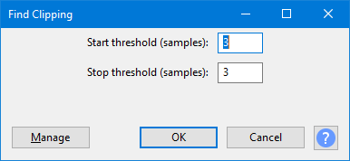

Find Clipping
- Accessed by:
- 
{kind=link}
Start Threshold
This is the number of contiguous clipped samples (default 3 samples) that must be present before they will be labeled as an individual run. The higher the threshold, the less likely a clipped region will be recognized and the fewer labels that will be generated.
Stop Threshold
This is the number of contiguous unclipped samples (default 3 samples) that must be present before the run of clipped samples will be terminated. The higher the threshold, the longer a clipped region will be and the fewer labels that will be generated.
Each individual run of clipped samples is marked in the format "number of number". For example, "11 of 11" means there are 11 samples in this run of clipped samples and all of them are clipped, while "9 of 11" means only nine samples in the run of 11 are clipped. In the case of a stereo track each channel will have its own label; if at one point both channels are clipped two labels will appear one above the other.
Buttons
Clicking on the command buttons give the following results:
- gives a dropdown menu enabling you to manage presets for the tool and to see some detail about the tool. For details see Manage presets.
- applies the effect to the selected audio with the current effect settings.
- aborts the effect and leaves the audio unchanged.
 brings you to the appropriate page in the Manual, this page.
brings you to the appropriate page in the Manual, this page.